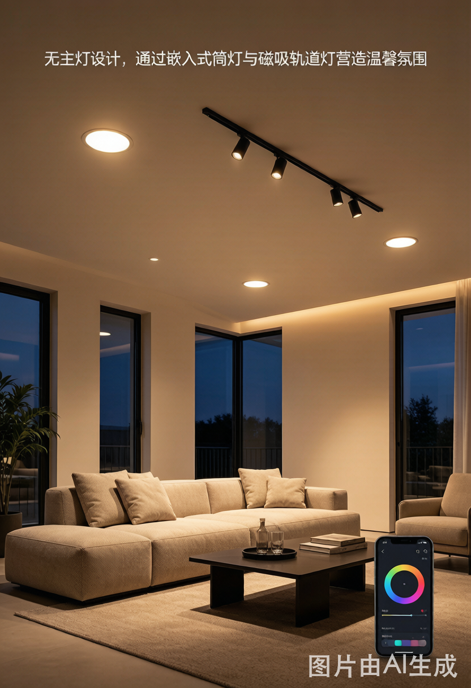

你有没有这种感觉？
睡前把智能灯调到10%亮度，看了半小时书，眼睛又酸又涩，比看手机还累。 或者长时间待在智能会议室里，离开时头隐隐发胀。
这不是你的错觉。问题可能就出在调光方式上。
调光的本质：控制"光有多少"
LED灯调光，不是简单地减少电流那么直接。主流方案有三种：
1. PWM 调光（脉冲宽度调制）
这是最普及的方案，便宜好做。原理是让灯以极高频率开关，通过改变开的时间占比来控制亮度。
- 开50%时间 → 感觉50%亮
- 开20%时间 → 感觉20%亮
人眼对频闪的感知不是线性的。PWM频率低于3000 Hz时，视觉系统会受到不可见的光强波动刺激，导致：
- 视觉疲劳、眼干
- 头痛（长时间暴露）
- 对运动物体产生"频闪效应"（像慢动作）
市面上大量"智能灯带"、廉价智能球泡使用400~1000 Hz的PWM，已被证明对敏感人群有明显刺激。
2. CCR 调光（恒流调节）
直接减少流过LED的电流，灯始终处于"亮着"的状态，只是亮度降低。
优点：
- 无频闪，对眼睛最友好
- 调光平滑，无闪烁感
- 低亮度时LED色温会漂移（通常偏暖）
- 调光深度有限，一般只能调到20%以下会出现色偏
- 驱动电路更复杂，成本更高
3. DALI 调光（数字可寻址照明接口）
DALI 是一套工业级照明控制协议，本身不规定调光方式，但配套驱动器通常采用高频PWM（≥25kHz）或CCR混合方案。
真正的价值在于：
| 特性 | DALI | 普通PWM信号 |
|---|---|---|
| 设备寻址 | 每盏灯独立ID | 无法区分 |
| 反馈状态 | 实时故障反馈 | 无 |
| 调光精度 | 16位（65536级） | 通常8位（256级） |
| 抗干扰 | 数字信号，强 | 模拟信号，弱 |
| 成本 | 高 | 低 |
如何判断一款灯是否会频闪伤眼？
看参数：频闪百分比（Flicker Percent）和频闪指数（Flicker Index）
- 频闪百分比 < 5%：基本无害
- 频闪百分比 10-30%：长时间使用有风险
- 频闪百分比 > 30%：不建议长时间工作/阅读
用手机慢动作验证
打开手机相机，切到0.5x慢动作（240fps或更高），把镜头对准灯。
- 看到明显黑条滚动 → PWM频率低，有频闪
- 画面稳定 → 频率足够高或是CCR，相对安全
Zigbee 智能灯的特殊问题：断线导致频闪
智能灯还有一个经常被忽略的问题：Zigbee网络不稳定时，调光指令会出现丢包或延迟，导致亮度抖动。
表现为：灯光偶尔"抽搐"一下，或者从100%调到30%时中间有短暂闪烁。
根本原因：
解决方法：
- 检查Zigbee协调器到灯的跳数，尽量不超过3跳
- 选用支持"渐变时间（transition time）"的驱动，即使指令抖动，亮度变化也会平滑
- 涂鸦（Tuya）平台的智能驱动已内置渐变曲线，推荐优先考虑
选购建议：不同场景怎么选
| 使用场景 | 推荐方案 | 核心理由 |
|---|---|---|
| 卧室/儿童房 | CCR驱动 + 低蓝光灯珠 | 无频闪，睡前护眼 |
| 书房/工作台 | 高频PWM（≥25kHz）或CCR | 长时间用眼需严格控制频闪 |
| 客厅氛围灯 | 智能Zigbee球泡/灯带 | 偶尔使用，中等要求 |
| 商业空间 | DALI + 专业驱动 | 精确控制，故障追踪 |
| 工业/仓库 | CCR恒流驱动 | 高功率，稳定性优先 |
一句话总结
PWM 便宜但有频闪风险，调光越深危害越大；CCR 最护眼但成本高；DALI 是专业场景的系统方案。家用护眼优先选标注"无频闪"或"高频PWM >25kHz"的产品，并用慢动作视频验证。
智能调光不等于护眼调光。看懂这三种方案，才能把"智能"真正用对地方。
本文由 nexLAMP 照明技术团队整理，如有技术问题欢迎联系：138-2549-6855